Eastman Kodak Company — KODK
| Close Price | Market Cap | P/E Ratio | Forward P/E Ratio | Implied Growth* | Implied Forward Growth* | Dividend | P/B Ratio |
|---|---|---|---|---|---|---|---|
| $9.76 | $952.58M | - | - | N/A | - | - | 1.6 |
Latest Headlines
- · Thriving in the Age of Overwhelm
- · Is Kodak’s New Hubble-Connected Family Devices Strategy Reshaping Its Core Brand Narrative (KODK)?
- · Kodak Reports Wider Y/Y Net Loss in Q1 Despite Strong Revenue Growth
- · Hubble Connected Partners with Kodak to Launch New Family Technology Ecosystem Across Baby, Kids, and Pet Categories
- · Stablecoin disruptors want to vanquish Visa but face a tough task ahead
- · Eastman Kodak Q1 Earnings Call Highlights
Revenue & Net Income
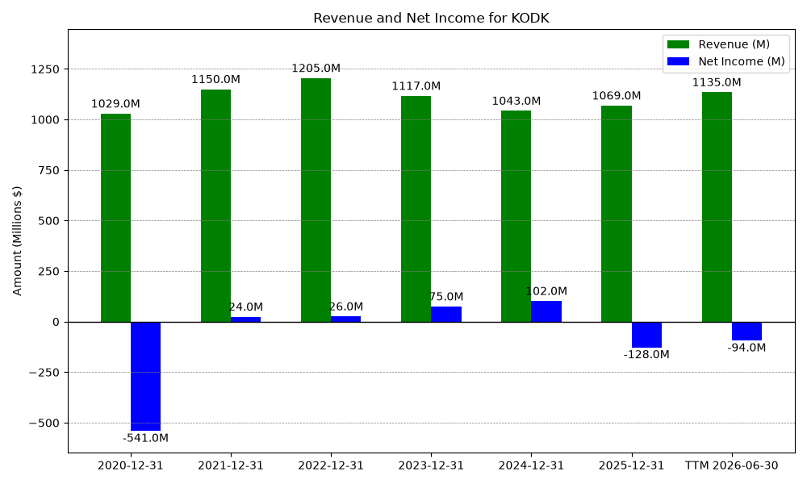
| Date | Revenue | Net_Income | EPS | Last_Updated | Revenue_Change | Net_Income_Change | EPS_Change | |
|---|---|---|---|---|---|---|---|---|
| 0 | 2020-12-31 | $1,029M | $-541M | $-9.77 | 2024-05-16 02:26:54 | N/A | N/A | N/A |
| 1 | 2021-12-31 | $1,150M | $24M | $0.30 | 2026-03-19 08:38:12 | 11.8% | -104.4% | -103.1% |
| 2 | 2022-12-31 | $1,205M | $26M | $0.33 | 2026-06-03 09:37:55 | 4.8% | 8.3% | 7.8% |
| 3 | 2023-12-31 | $1,117M | $75M | $0.71 | 2026-06-03 09:37:55 | -7.3% | 188.5% | 116.0% |
| 4 | 2024-12-31 | $1,043M | $102M | $0.97 | 2026-06-03 09:37:55 | -6.6% | 36.0% | 36.6% |
| 5 | 2025-12-31 | $1,069M | $-128M | $-1.78 | 2026-06-03 09:37:55 | 2.5% | -225.5% | -283.5% |
| 6 | TTM 2026-03-31 | $1,087M | $-137M | $-1.87 | 2026-05-19 09:09:46 | 1.7% | 7.0% | 5.1% |
EPS
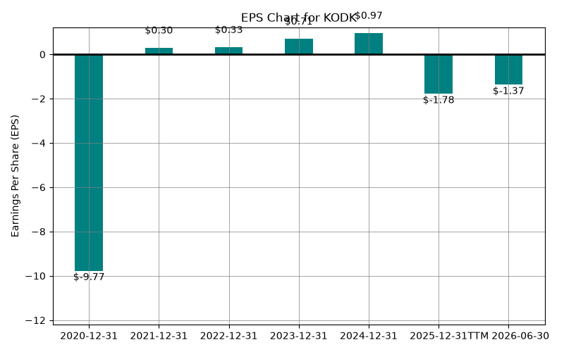
Forecasts


Y/Y % Change
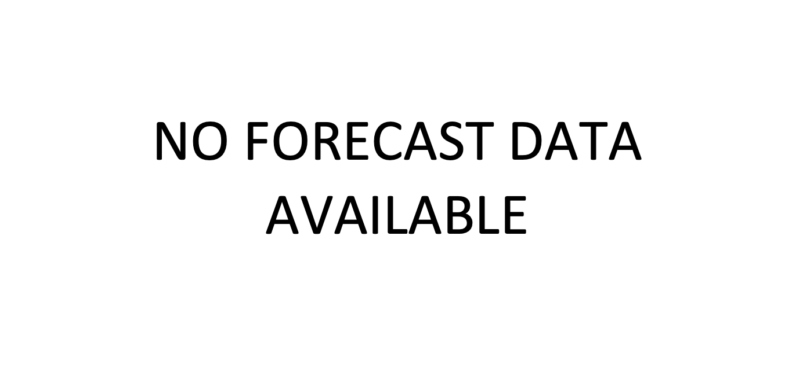

No data available
Forward Estimate History
How the next-FY EPS and revenue estimates have drifted over time. One line per fiscal year – past lines end when that FY became current.
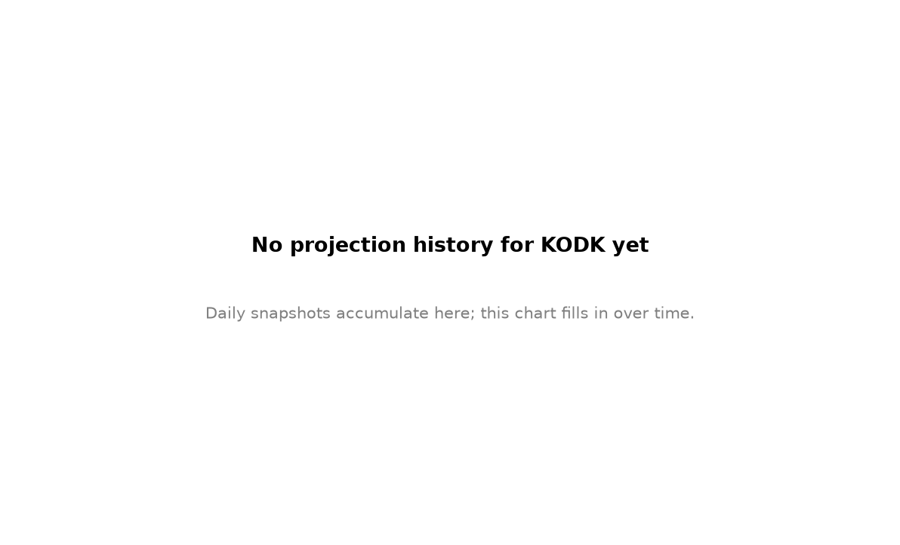
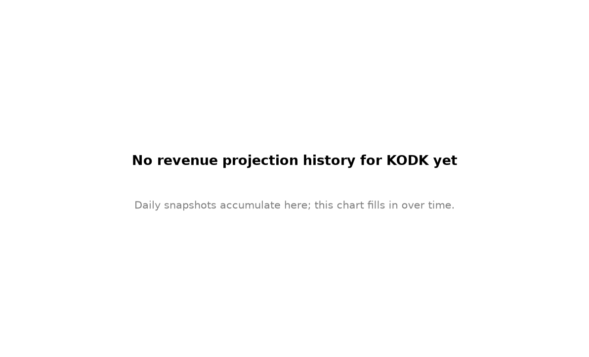
Expenses
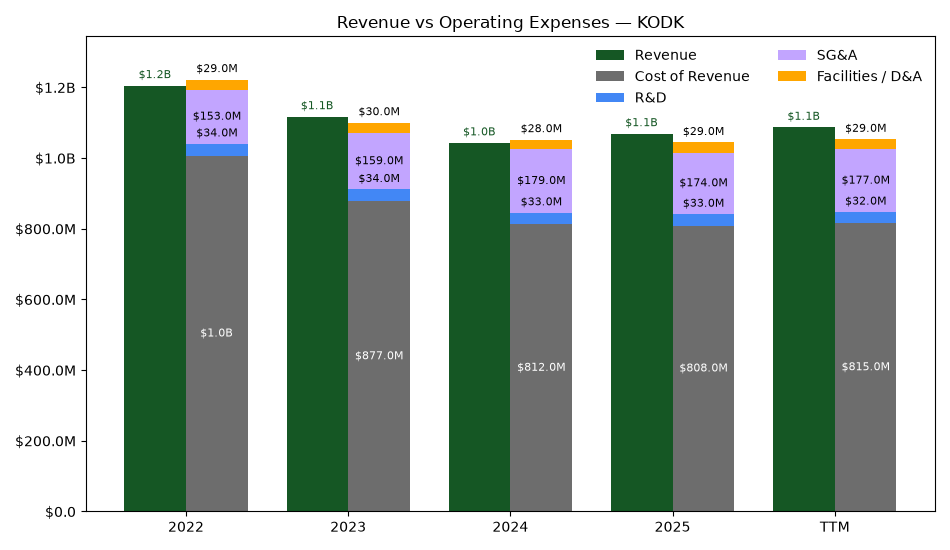
| Year | Revenue ($) | Cost of Revenue ($) | R&D ($) | SG&A ($) | Facilities / D&A ($) |
|---|---|---|---|---|---|
| 2022 | $1.2B | $1.0B | $34.0M | $153.0M | $29.0M |
| 2023 | $1.1B | $877.0M | $34.0M | $159.0M | $30.0M |
| 2024 | $1.0B | $812.0M | $33.0M | $179.0M | $28.0M |
| 2025 | $1.1B | $808.0M | $33.0M | $174.0M | $29.0M |
| TTM | $1.1B | $815.0M | $32.0M | $177.0M | $29.0M |
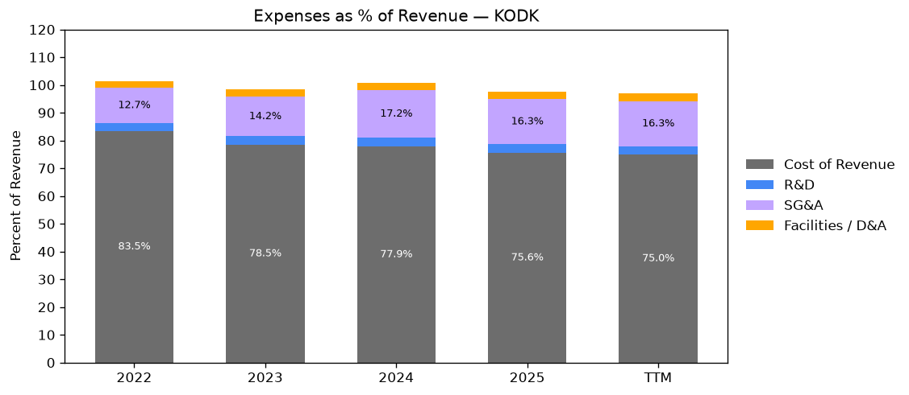
| Year | Revenue Change (%) | Cost of Revenue Change (%) | R&D Change (%) | SG&A Change (%) | Facilities / D&A Change (%) |
|---|---|---|---|---|---|
| 2023 | -7.30 | -12.82 | 0.00 | 3.92 | 3.45 |
| 2024 | -6.62 | -7.41 | -2.94 | 12.58 | -6.67 |
| 2025 | 2.49 | -0.49 | 0.00 | -2.79 | 3.57 |
| TTM | 1.68 | 0.87 | -3.03 | 1.72 | 0.00 |
No unmapped expenses.
Segment Performance
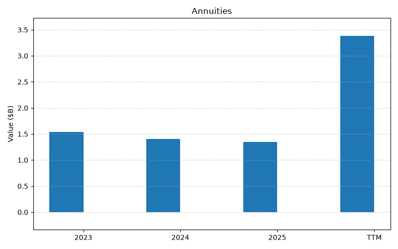
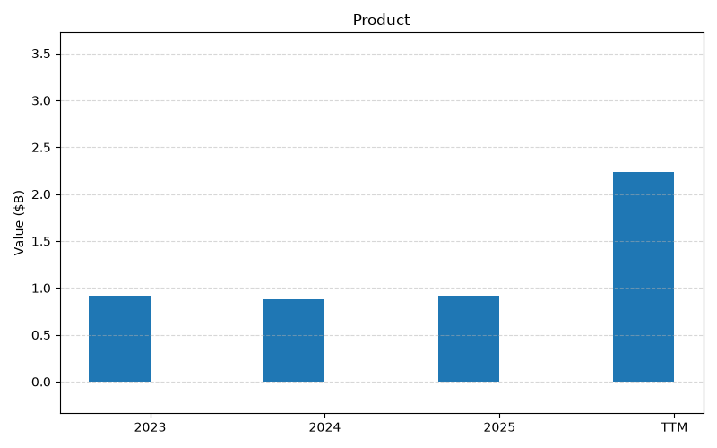
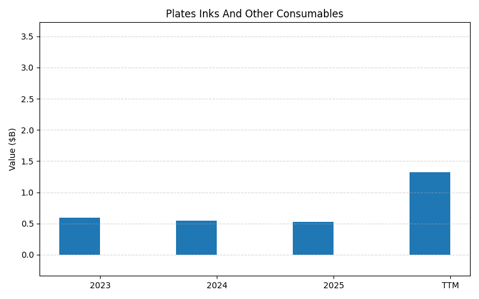
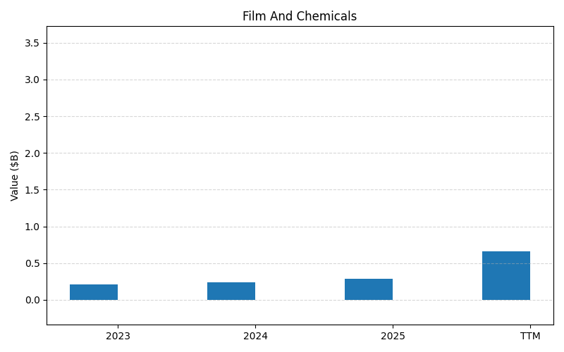
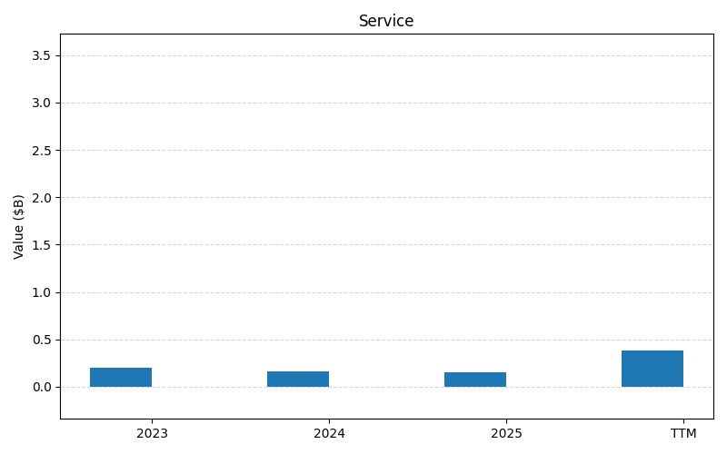
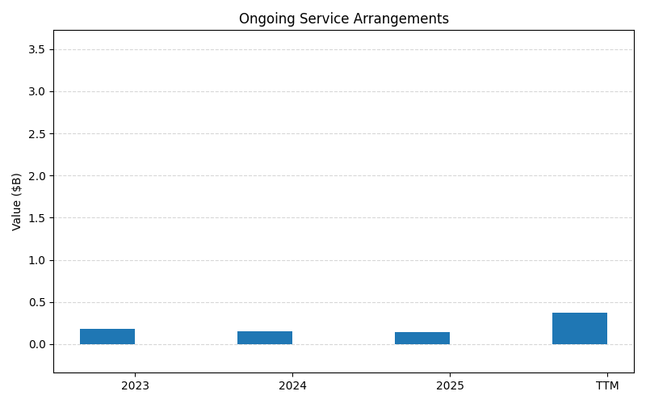
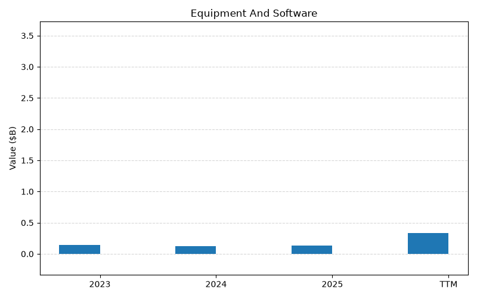
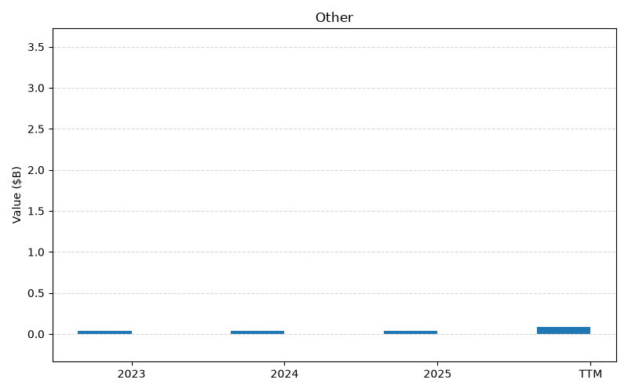
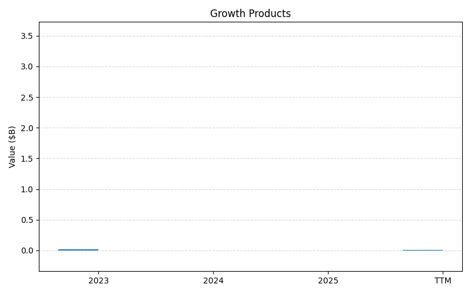
SEGMENTS v2025-09-09 · 2026-06-03 09:38 UTC — Units: $B. Rows list fiscal years (last 3 + TTM) with revenue for each segment; the final row shows the TTM revenue mix (operating income columns display “—” where mix is not applicable).
| Year | Annuities Rev | Prod Rev | Plates Inks And Other Consumables Rev | Film And Chemicals Rev | Services Rev | Ongoing Service Arrangements Rev | Equipment And Software Rev | Other Rev | Growth Products Rev | Total Rev |
|---|---|---|---|---|---|---|---|---|---|---|
| 2023 | 1.54B | 0.92B | 0.60B | 0.21B | 0.20B | 0.18B | 0.14B | 0.03B | 0.01B | 3.84B |
| 2024 | 1.40B | 0.88B | 0.55B | 0.24B | 0.16B | 0.15B | 0.13B | 0.04B | 0.00B | 3.55B |
| 2025 | 1.34B | 0.92B | 0.53B | 0.29B | 0.15B | 0.14B | 0.14B | 0.04B | 0.00B | 3.55B |
| TTM | 3.38B | 2.24B | 1.33B | 0.66B | 0.39B | 0.37B | 0.34B | 0.09B | 0.01B | 8.80B |
| % of Total (TTM) | 38.5% | 25.4% | 15.1% | 7.5% | 4.4% | 4.2% | 3.8% | 1.0% | 0.1% | 100% |
Segment Performance (Axis 2)
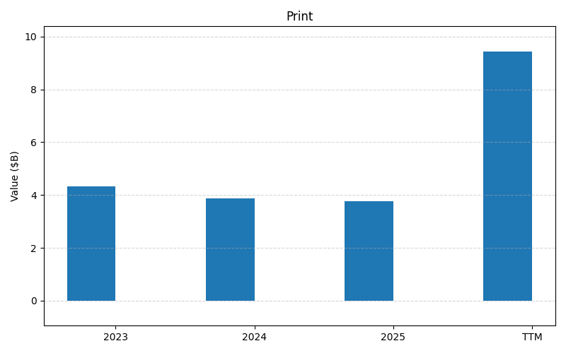
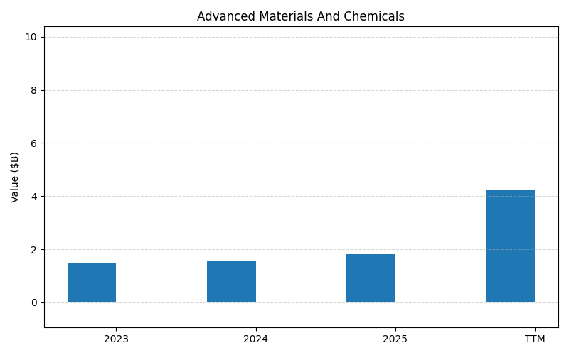
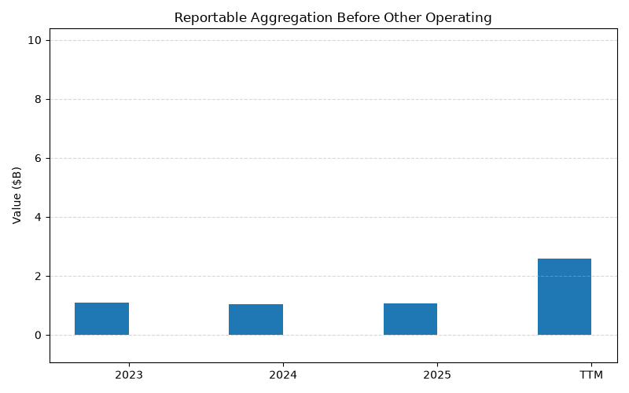
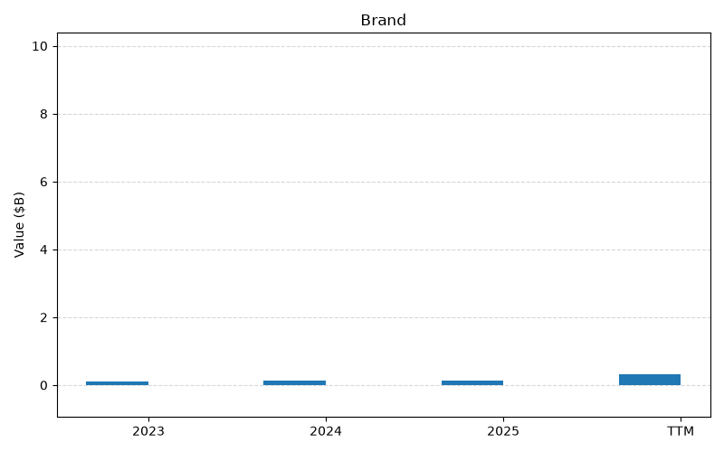
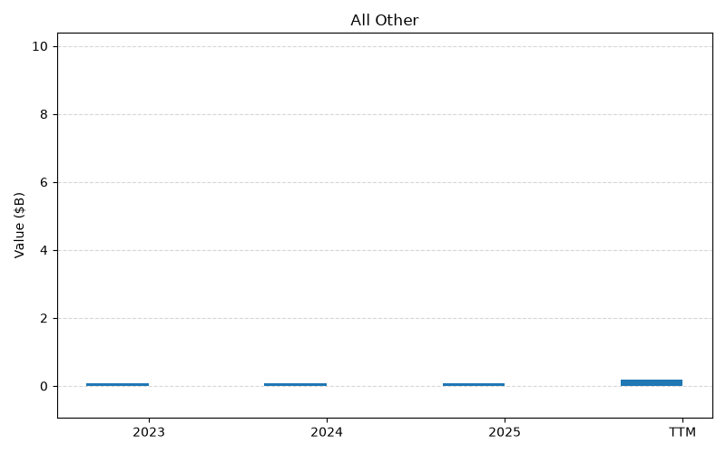
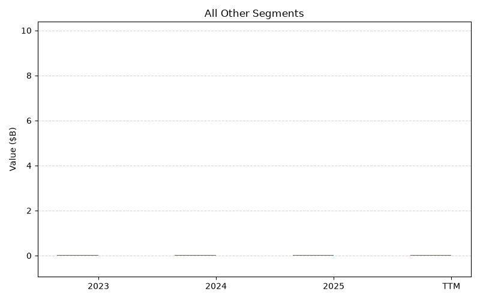
SEGMENTS v2025-09-09 · 2026-06-03 09:38 UTC — Units: $B. Rows list fiscal years (last 3 + TTM) with revenue for each segment; the final row shows the TTM revenue mix (operating income columns display “—” where mix is not applicable).
| Year | Print Rev | Advanced Materials And Chemicals Rev | Reportable Aggregation Before Other Operating Rev | Brand Rev | All Other Rev | All Other Segments Rev | Total Rev |
|---|---|---|---|---|---|---|---|
| 2023 | 4.33B | 1.49B | 1.10B | 0.10B | 0.09B | 0.02B | 7.13B |
| 2024 | 3.87B | 1.57B | 1.03B | 0.12B | 0.07B | 0.01B | 6.67B |
| 2025 | 3.76B | 1.82B | 1.05B | 0.14B | 0.07B | 0.01B | 6.86B |
| TTM | 9.44B | 4.26B | 2.59B | 0.32B | 0.18B | 0.04B | 16.8B |
| % of Total (TTM) | 56.1% | 25.3% | 15.4% | 1.9% | 1.1% | 0.2% | 100% |
Balance Sheet
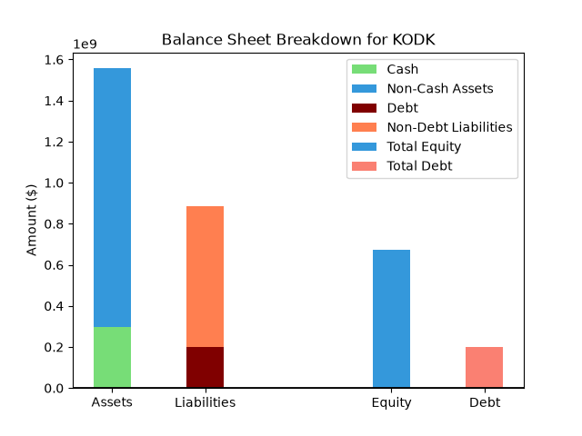
| Metric | Value | |
|---|---|---|
| 0 | Total Assets | $1,557M |
| 1 | Cash | $299M |
| 2 | Total Liabilities | $885M |
| 3 | Total Debt | $198M |
| 4 | Total Equity | $672M |
| 5 | Debt to Equity Ratio | 0.29 |
EPS & Dividend

Valuation

No data available
No data available
Implied Growth
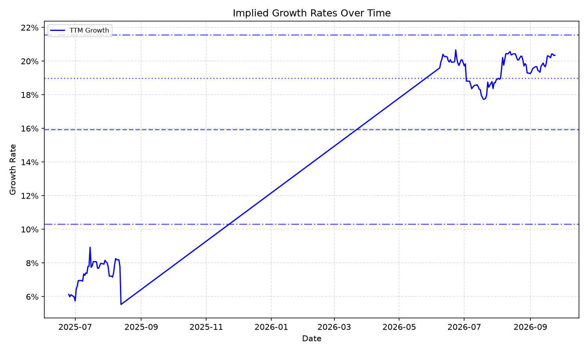
| Average | Median | Std Dev | Current | Percentile | ||||||
|---|---|---|---|---|---|---|---|---|---|---|
| TTM | Forward | TTM | Forward | TTM | Forward | TTM | Forward | TTM | Forward | |
| Timeframe | ||||||||||
| 1 Year | 7.39% | – | 7.68% | – | 0.79% | – | 5.53% | – | 2.4% | – |
| 3 Years | 7.39% | – | 7.68% | – | 0.79% | – | 5.53% | – | 2.4% | – |
| 5 Years | 7.39% | – | 7.68% | – | 0.79% | – | 5.53% | – | 2.4% | – |
| 10 Years | 7.39% | – | 7.68% | – | 0.79% | – | 5.53% | – | 2.4% | – |